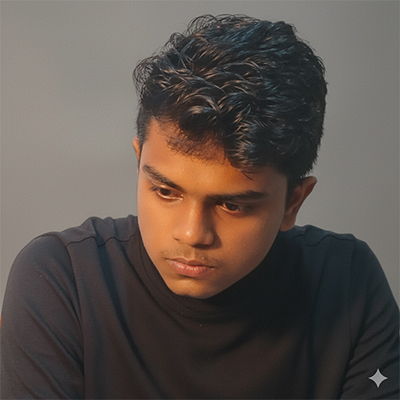

Hey, Prabhash here
Designer
Hello, I’m passionate about design, and I create digital solutions that help elevate your business. Explore my curated projects to see how I combine creativity with strategy to solve real-world challenges. Let’s work together to create something truly unforgettable.